Table of Contents
言葉が生まれる瞬間に立ち会う
――私がPicture Descriptionに行き着いた理由
日本の英語教育の現場に立って十数年、私はずっと一つの大きな壁と向き合ってきました。それは、生徒たちに英語の知識がないという壁ではありません。むしろ、多くの生徒たちは真面目です。単語テストに向けて一生懸命覚え、文法問題集を何周も解き、関係代名詞や仮定法の説明を聞けば、ノートにきれいにまとめることができます。定期考査では高得点を取り、模試でも文法問題を正確に処理できる。日本の教室には、そういう努力家の生徒がたくさんいます。
しかし、いざ一枚の写真を見せて「What can you see?」「Tell me about this picture.」と尋ねた瞬間、空気が変わります。頭ではわかっているはずなのに、言葉が出てこない。目の前には人がいる。犬がいる。子どもが走っている。空は青い。テーブルの上に本がある。そんなことは日本語なら一瞬で言えるのに、英語になると急に沈黙が生まれる。私はその沈黙を、何度も教室で見てきました。
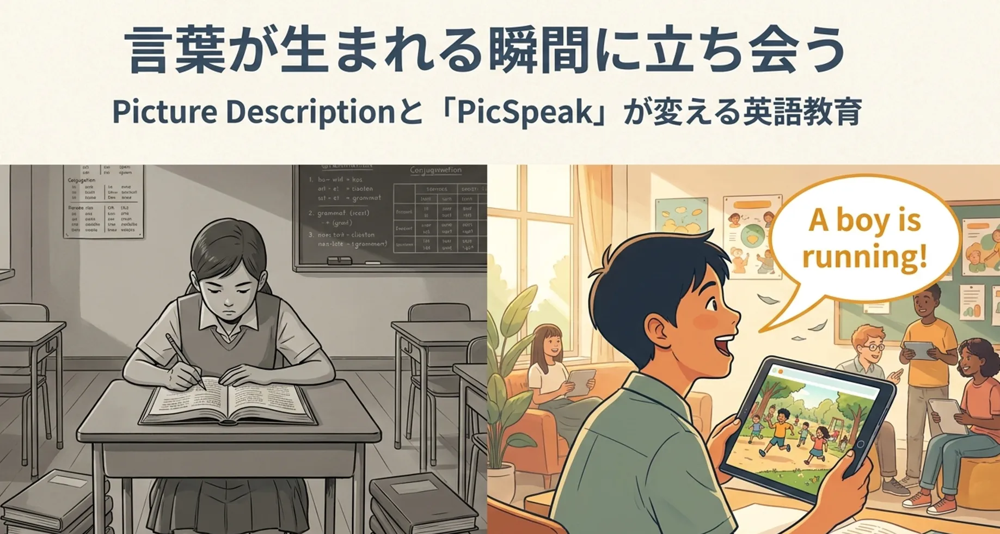
「知識はあるのに、話せない」。この言葉は、日本の英語教育を批判するための単純なスローガンではありません。むしろ、現場で努力している教師と生徒が、長い時間をかけてぶつかってきた構造的な課題です。生徒たちは怠けているわけではありません。教師が何もしていないわけでもありません。問題は、英語を「知っている状態」から、英語を「その場で使える状態」へ移すための練習設計が、十分に日常化されてこなかったことにあります。
私が力を入れてきたPicture Description、つまり写真やイラストを見て英語で描写する活動は、この壁を突破するための実践です。それは単なるウォームアップではありません。単なる楽しいゲームでもありません。私にとってPicture Descriptionは、知識として眠っている英語を、呼吸する言葉へ変えるためのトレーニングです。生徒の中にある単語、文法、発音、推測力、観察力、想像力を一気に結びつけ、「あ、英語って今ここで使えるんだ」と気づかせる活動なのです。
1. 文法を知っていることと、情景を英語にすることは違う
多くの日本人学習者は、英語を話すときに頭の中でまず日本語の文を作ります。「男の子が公園で走っています」と考え、それを「男の子＝a boy」「走っている＝is running」「公園で＝in the park」と分解し、最後に英語の語順に並べ替えようとします。この方法は、紙の上で時間をかけて英作文をする場合にはある程度機能します。しかし、実際のコミュニケーションでは遅すぎます。相手の表情は変わり、会話は進み、言いたかったことは次の瞬間には古くなってしまうからです。
スピーキングに必要なのは、翻訳の速さではありません。目で見たもの、感じたこと、頭に浮かんだ概念を、できるだけ直接英語の形へ変換する力です。たとえば一枚の写真を見て、最初に「男の子が走っている」と日本語で考えるのではなく、視線が男の子を捉えた瞬間に “A boy is running.” と英語のまとまりが立ち上がる。この状態を作るには、知識を何度も使い、処理を自動化していく必要があります。
第二言語習得の分野では、知識が実際の技能として使えるようになるには、意味のある練習を通して処理が速くなり、意識的なルール検索に頼らなくなる過程が重要だと考えられてきました。DeKeyserらの技能習得理論は、宣言的な知識、つまり「知っている知識」が、練習を通して手続き化され、より自動的に使えるようになる過程を説明しています。これはスポーツや楽器と同じです。フォームを説明できることと、試合中に自然に体が動くことは違います。英文法も同じで、現在進行形を説明できることと、目の前の動作を見て瞬時に “She is cooking.” と言えることは別の能力なのです。
Picture Descriptionは、この「知識から技能へ」の橋渡しをします。写真の中には、主語になる人や物があります。動作があります。場所があります。形、色、数、位置関係、感情、推測できる背景があります。つまり、一枚の画像は、英語を話すための素材をすでに豊かに含んでいます。生徒はゼロから話題を作らなくてよい。目の前の情報を頼りに、知っている英語を取り出し、つなぎ、声に出せばよいのです。この「話す内容が目の前にある」という安心感が、発話の第一歩を支えてくれます。
2. 2015年、ニューヨークの美術館で見た『言葉が生まれる場』
私がPicture Descriptionの可能性を強く意識するようになった原点の一つに、2015年の経験があります。外務省の若手英語教員米国派遣事業に参加した際、私はニューヨークの美術館を訪れる機会がありました。そこで、学芸員の方が小学生たちを連れて作品鑑賞ツアーをしている場面に出会いました。
私は横から、そのやり取りをじっと観察していました。学芸員は作品の解説を一方的に始めるのではありませんでした。まず子どもたちに問いかけたのです。“What can you see in this work?” 作品の中に何が見える？ このシンプルな問いが、子どもたちの目を一気に開かせました。子どもたちは、正解を探すというより、見えたものを次々に言葉にしていきました。「人がいる」「暗い色がある」「悲しそう」「何かを待っているみたい」「後ろに小さな家がある」。彼らは作品を見ながら、自分の観察を自分の言葉で外に出していました。
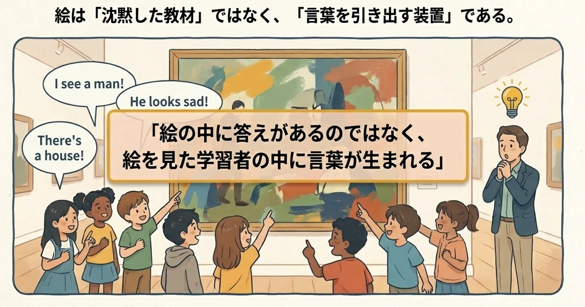
そのとき私は、強い衝撃を受けました。ここで起きていることは、単なる美術鑑賞ではない。子どもたちは、絵を見ることを通して、観察し、推測し、根拠を持ち、他者の発言を聞き、自分の見方を更新している。そして、そのすべてが言葉を通して行われている。つまり、絵は沈黙した教材ではなく、言葉を引き出す装置なのだと感じたのです。
この経験は、私の中に一つの問いを残しました。もし絵や写真が、母語の子どもたちからこれほど自然に言葉を引き出すなら、英語学習者にも同じことが起こせるのではないか。むしろ、日本のように教科書本文や文法問題に強く依存しがちな環境だからこそ、文字のない視覚情報を使うことで、生徒の発話をもっと自由に引き出せるのではないか。絵の中に答えがあるのではなく、絵を見た学習者の中に言葉が生まれる。その瞬間を教室で作りたい。これが、私がPicture Descriptionに本気で向き合い始めた大きなきっかけでした。
3. 視覚情報は、日本語を経由しない『概念化』を促す
Picture Descriptionの強さは、視覚情報が文字情報とは違う形で脳に入ってくる点にあります。英文を読ませる活動では、生徒は最初から英語の文字列に向き合います。そのため、どうしても「これは現在完了だ」「このthatは関係代名詞だ」「この単語の意味は何だ」と分析的に処理しがちです。もちろん、そのような学習も重要です。しかし、スピーキングに必要なのは、分析だけではありません。見える世界を意味として捉え、それを言葉にする過程です。
人が話すとき、頭の中では大まかに、何を言うかを考える段階、言語形式に組み立てる段階、音として出す段階が連続して働いていると考えられています。Leveltの発話産出モデルでは、概念化、形式化、調音という流れが重視されます。ここで大切なのは、話す前に必ず「言いたい意味」が存在するということです。文法はその意味を形にするための道具です。ところが日本の英語教育では、しばしば道具の練習が先に来すぎて、「そもそも何を言いたいのか」を瞬時に立ち上げる練習が不足します。
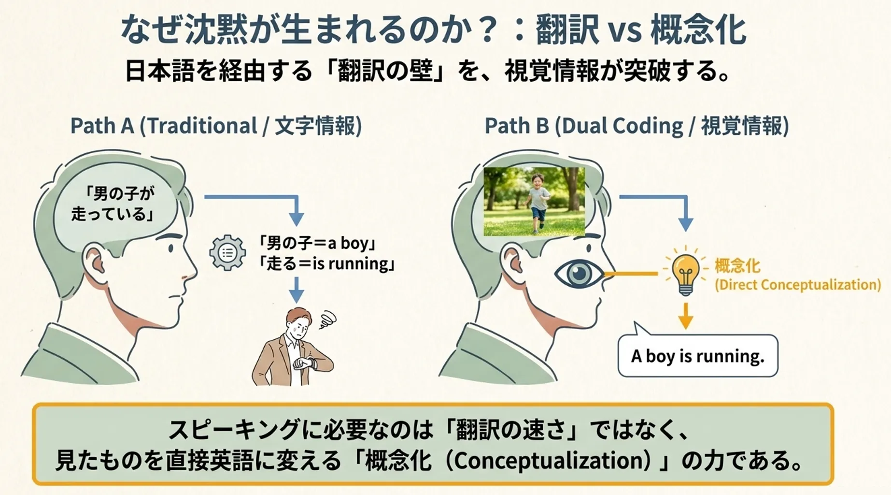
写真やイラストは、この概念化の段階を強力に支えます。生徒は文字を読む前に、まず見る。見ることで、人物、物、場所、動作、雰囲気、感情、関係性を捉える。そこから “A girl is looking at a map.” “There are two cups on the table.” “The man looks tired.” のように、意味を英語の形へ変えていく。このとき、生徒は日本語訳の問題を解いているのではありません。目の前の世界を、英語で切り取る練習をしているのです。
Paivioの二重符号化理論やMayerのマルチメディア学習理論も、言葉とイメージを結びつける学習の強さを示してきました。人は言語情報だけでなく、視覚情報も使って理解し、記憶し、取り出します。写真描写では、画像が意味のアンカーになります。単語だけを覚えるよりも、犬が走っている絵を見ながら “The dog is running.” と言うほうが、語彙、文法、発音、状況が一つに結びつきます。英語が抽象的な記号ではなく、目の前の世界を表す生きた道具になるのです。
4. Output Hypothesis：話すからこそ、自分に足りないものが見える
英語を話せるようになるには、インプットが不可欠です。多くの英語を聞き、読み、表現に触れることなしに、自然な英語は身につきません。しかし、インプットだけでは十分ではありません。生徒が実際に英語を口に出そうとした瞬間、初めて自分の中にある穴が見えます。「犬はdogと言える。でも、犬が何かをくわえているって何て言うんだろう」「女の人が立っているは言える。でも、腕を組んでいるは言えない」「There is と There are はどっちだっけ」。この気づきが、学習を前に進めます。
SwainのOutput Hypothesisは、言語を産出することが学習者に気づきを与え、仮説検証を促し、言語形式への意識を高めると説明します。つまり、話すことは単なる確認テストではありません。話そうとすること自体が学習です。言えなかった瞬間に、必要な表現がはっきりする。うまく言えた瞬間に、その表現が自分のものになる。友達の発話を聞いて、「あ、そう言えばいいのか」と新しい言い方に出会う。Picture Descriptionは、このアウトプットによる学習を非常に起こしやすい活動です。
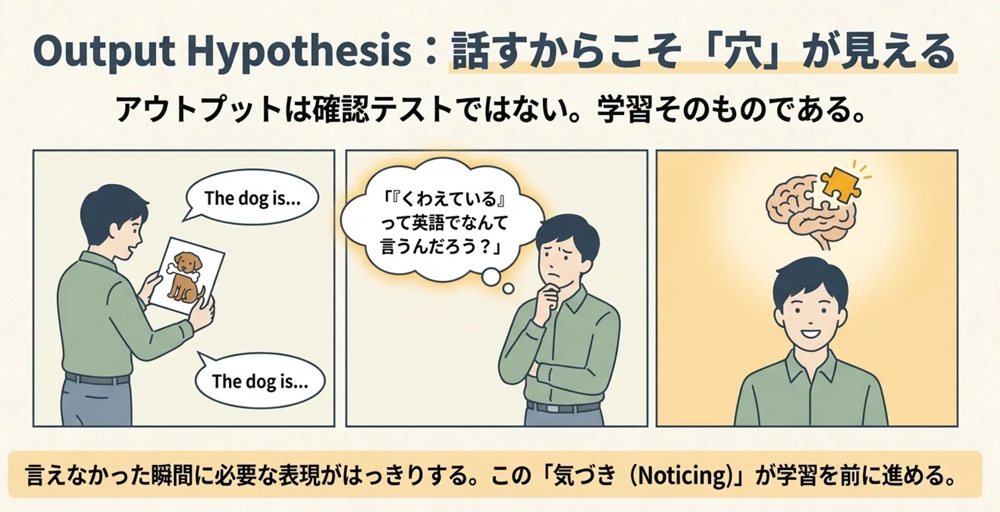
なぜなら、写真には言うべきことが無数にあるからです。たとえば公園の写真なら、最低限 “There is a boy.” と言える。少しできる生徒なら “A boy is playing soccer in the park.” と言える。さらに発展すれば “A boy wearing a blue T-shirt is kicking a soccer ball while his friends are watching him.” と言える。同じ画像でも、学習者のレベルによって発話の深さを変えられるのです。
この活動では、正解は一つではありません。むしろ、見えたものをどう切り取り、どの順番で、どの表現を使って話すかに個性が出ます。だからこそ、生徒は「間違えたら終わり」というテストの緊張から少し解放されます。最初は単語だけでもよい。次に二語、三語のまとまりにする。やがて文になる。文がつながり、説明になる。この小さな成功の積み重ねが、英語を口に出す心理的な壁を下げていきます。
5. Picture Descriptionは、流暢性を育てる最短距離である
日本の英語教育では、正確さが重視されてきました。もちろん正確さは大切です。しかし、正確さだけを追い求めると、生徒は話す前に自分の英語を検閲し始めます。「三単現のsを忘れたらどうしよう」「前置詞が違うかもしれない」「発音が変だと思われるかもしれない」。その結果、沈黙が生まれます。英語を話す活動なのに、話す前の不安が大きくなりすぎるのです。
流暢性とは、完璧な英語を高速で話すことではありません。今持っている英語を、必要な場面で、途切れすぎずに使える力です。Nationの言語学習における四つのストランドでは、意味重視のインプット、意味重視のアウトプット、言語形式重視の学習、そして流暢性育成がバランスよく必要だとされています。Picture Descriptionは、この中でも意味重視のアウトプットと流暢性育成を同時に実現しやすい活動です。
なぜなら、写真は毎回違うからです。生徒は同じ文を機械的に暗唱するのではなく、目の前の画像に合わせて言葉を選びます。しかし、使う構造には反復があります。“There is/are…” “A person is …ing.” “It looks like…” “On the left, …” “In the background, …” “Compared with the first picture, …” のような表現が、画像を変えながら何度も使われます。この「意味は新しいが、型は繰り返される」という状態が、流暢性の育成に非常に合っています。
生徒は最初、たどたどしく話します。単語を探し、文の途中で止まり、同じ表現を繰り返します。しかし、それでよいのです。繰り返すうちに、“There is” が考えなくても出るようになる。“is wearing” が人の服装を見た瞬間に出るようになる。“next to” や “behind” が位置関係と結びつくようになる。こうして、英語が少しずつ口の筋肉と視覚認知に結びついていきます。
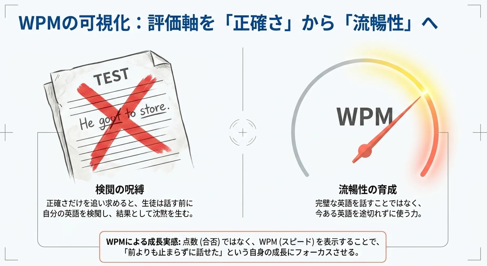
PicSpeakでWPM、つまりWords Per Minuteを可視化しているのは、この流暢性を学習者自身に意識してほしいからです。点数だけでは、生徒は「合っているか、間違っているか」に意識を奪われます。しかしWPMが表示されると、「前よりも止まらずに話せた」「今日はたくさん英語を口に出せた」という成長が見えます。流暢性は根性論では育ちません。見える化され、繰り返され、少しずつ更新されることで育つのです。
6. PicSpeakという形にした理由：先生一人の情熱を、全国の教室へ
私はPicture Descriptionの力を現場で何度も感じてきました。普段は英語を話すことに消極的な生徒が、写真を見た瞬間に “There is a cat!” と言う。友達が “The cat is under the chair.” と続ける。別の生徒が “It looks sleepy.” と付け加える。教室の中に、小さな英語の連鎖が生まれる。私はその瞬間が好きです。英語がテストのための記号ではなく、人と人をつなぐ音になる瞬間だからです。
しかし同時に、私は限界も感じていました。Picture Descriptionを継続的に行うには、画像を準備し、レベルに合わせてターゲット表現を考え、発話を聞き取り、フィードバックし、言えた表現と言えなかった表現を整理する必要があります。これは教師にとって大きな負担です。情熱のある先生ほど頑張りすぎてしまう。けれど、活動が先生個人の努力だけに依存している限り、全国の学校へ広げることは難しい。
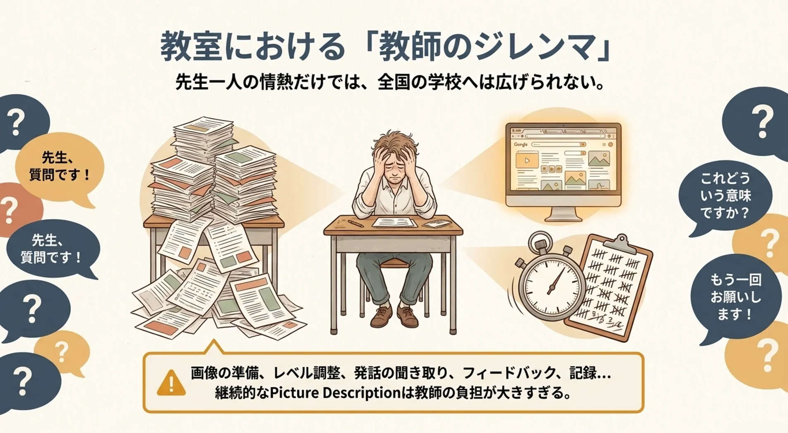
そこで私は、Picture Descriptionの理論と実践をデジタルツールとして形にしたいと考えました。それがPicSpeakです。PicSpeakは、写真やイラストを見ながら英語で描写し、その発話をリアルタイムで認識し、学習者に即時フィードバックを返すアプリケーションです。目指したのは、単なるスピーキング練習アプリではありません。私が教室で大切にしてきた「見る、気づく、言う、言えなかったことを練習する」という学習の流れを、誰でも、どこでも、楽しく回せる環境です。
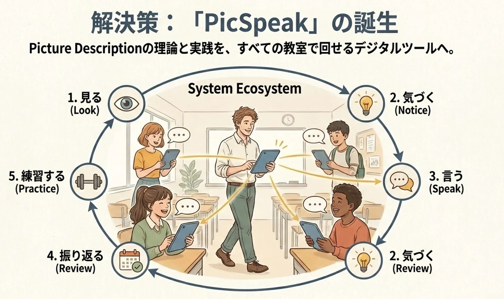
PicSpeakの中心には、三つの柱があります。第一に、発話を単語の羅列としてではなく、写真の中のモノや人であるTargetと、その状態や動作であるStateの二軸で捉えること。第二に、WPMによって流暢性を可視化すること。第三に、学習者が詰まったときに、答えを丸ごと与えるのではなく、次の一歩を支えるSupport Modeを用意することです。この三つは、私の現場経験と学習理論を結びつけたPicSpeakの核です。
7. Target × State：
英語の語順を、体で覚える
PicSpeakでは、学習者の発話を単純に「キーワードを言えたかどうか」だけで判定しません。写真の中にあるモノや人、つまりTargetと、その状態や動作であるStateが、英語らしい順序で結びついているかを重視します。なぜなら、英語のスピーキングにおいて重要なのは、単語を知っていることだけではなく、それらを英語の語順で組み立てることだからです。
たとえば、画像の中に「女の子が本を読んでいる」場面があるとします。生徒が “girl” “book” “read” と単語を言えたとしても、それだけでは発話としては不十分です。PicSpeakが目指すのは、“A girl is reading a book.” のように、主語、動作、目的語が自然につながる状態です。
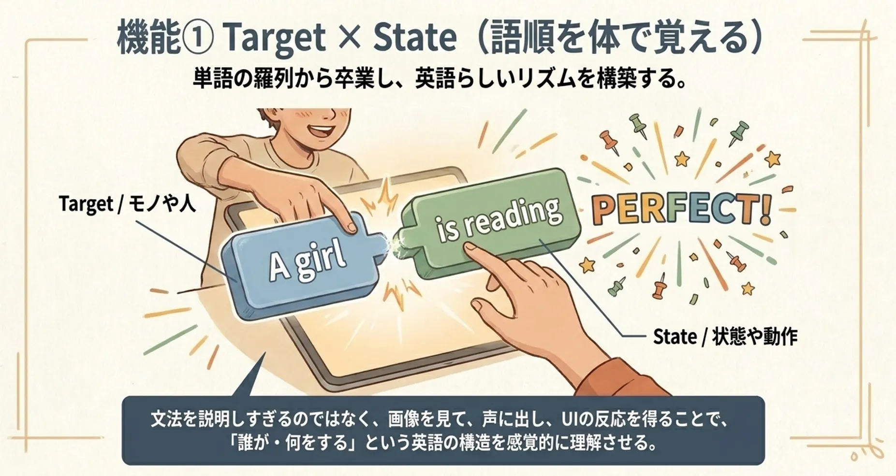
画面上のプログレスバーが進み、ピンが落ち、“FOUND!” や “PERFECT!” と表示される。すると生徒は、「この言い方で伝わった」「この順番で言えばよいのだ」と感覚的に理解します。英語は、基本的に誰が何をするのかを早く示す言語です。このリズムを何度も体験することで、生徒は日本語の語順から少しずつ離れ、英語の構造で世界を見る練習をしていきます。
8. Support Mode：
答えを教えるのではなく、一歩先へ連れていく
Picture Descriptionは自由度が高い活動ですが、その自由さは時に不安にもなります。何を言えばよいかわからない。言いたいことはあるけれど単語が出てこない。この状態で放置されると、生徒は「やっぱり自分は話せない」と感じてしまいます。
PicSpeakのSupport Modeは、ヴィゴツキーの発達の最近接領域、いわゆるZPDの考え方に基づいています。学習者が言葉に詰まっているとき、画像の該当箇所に次に言うべきキーワードがふわっと浮かび上がります。たとえば、犬の近くで止まっている生徒には “dog” や “running” のヒントが出る。場所を表す表現で困っているなら “under” “next to” “behind” のような語が支えになる。完全な文を丸ごと提示するのではなく、発話のきっかけを渡すのです。
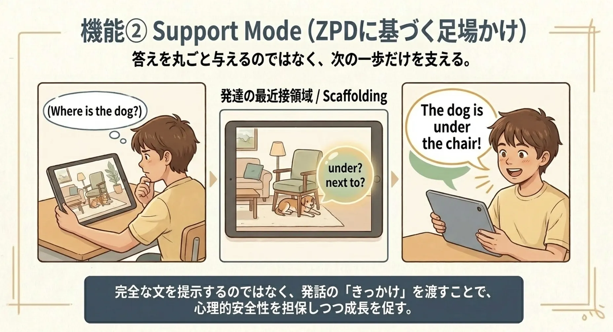
この支援は、心理的安全性にもつながります。生徒は「詰まっても助けがある」と感じられる。教師も「全員を同時に見なければならない」という負担から少し解放される。簡単すぎず、難しすぎない、そのちょうど間にある挑戦を、PicSpeakはSupport Modeで作ろうとしています。
9. 5つのゲームモードに込めた学習設計
PicSpeakには、目的に応じた五つのゲームモードがあります。これは単に飽きさせないためのバリエーションではありません。それぞれが、異なるスピーキング能力を鍛えるように設計されています。
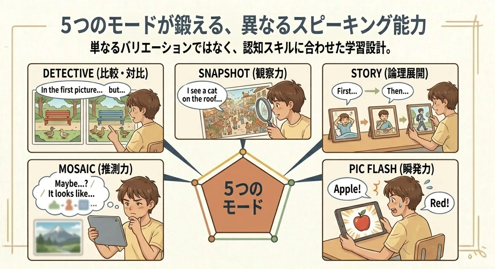
📸 SNAPSHOT
一枚の写真をじっくり観察し、見えるものをできるだけ詳しく英語にします。初心者は色、数、モノの名前から始め、上級者は登場人物の感情や背景にあるストーリーまで推測する。観察を言語へ変える基礎体力を育てます。
📖 STORY
複数の写真を順番に見ながら出来事を語るモード。“First,” “Then,” “After that,” “Finally,” のような接続表現を使い、出来事を順序立てて話す。これは英検や入試、プレゼンテーションに直結する、英語で物語る力の土台です。
⚡ PIC FLASH
瞬発力を鍛えるモードです。画像が次々に表示され、瞬間的に反応します。完璧な長文よりも、素早く英語を取り出すことが大切です。語彙の引き出しを開けるスピード（Mental Lexicon）を反射的に高めるトレーニングです。
🧩 MOSAIC
推測表現を引き出すモードです。最初はモザイクがかかり、“It looks like…” “Maybe…” “I think…” と言いながら少しずつ画像の正体に迫ります。不確かな状況で、英語を使って仮説を立てていく実用的な力を養います。
🕵️♂️ DETECTIVE
間違い探しを通して比較表現を鍛えるモードです。二枚の似た絵を見比べ、「上の絵では男の子が帽子をかぶっているが、下の絵ではかぶっていない」のように違いを説明します。“In the first picture…” “but” “different from” などの論理構造を自然に育てます。
10. 小学生・中学生・高校生、それぞれに必要なPicture Description
Picture Descriptionの良さは、同じ活動を発達段階に応じて調整できる点にあります。小学生にとって大切なのは、英語を口に出すことへの抵抗感を下げることです。“I see a dog.” “It is red.” “Two cats.” こうした短い表現で十分です。画像を見て、声に出し、反応が返ってくる。その成功体験が、英語への前向きな感情を育てます。
中学生には、現在進行形、There is/are、前置詞、代名詞、形容詞など、学校で学ぶ文法を実際の意味の中で使う場が必要です。教科書で “He is playing tennis.” を学んでも、それを自分の目で見た画像に対して使わなければ、文法はテスト用の知識に留まります。Picture Descriptionでは、“A boy is playing tennis.” “The bag is under the desk.” のように、文法が生きた表現として使われます。
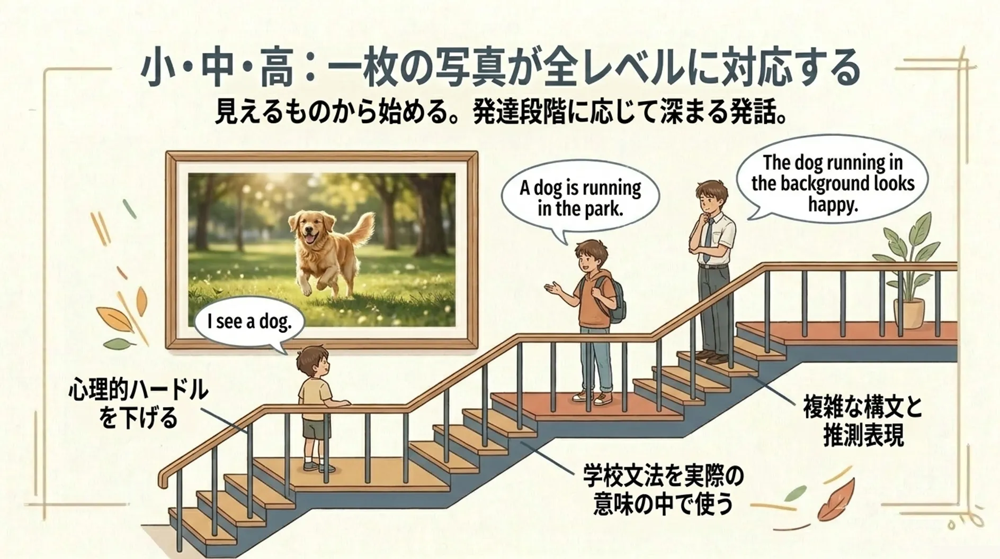
高校生には、より複雑で深い描写が求められます。関係代名詞を使って “The woman who is standing near the door is holding a phone.” と言う。接続詞を使って因果関係を述べる。推測表現を使って状況を読み取る。高校生にとってPicture Descriptionは、単なる基礎練習ではなく、英語で考えを構成する高度なトレーニングになります。
重要なのは、どの段階でも「見えるものから始める」ことです。英語が苦手な生徒でも、写真の中に何があるかはわかります。そこから一語でも言えれば、学習は始まります。一つの教材で、幅広いレベルの学習者に対応できる。これは、学校現場において非常に大きな強みです。
11. リザルト画面は、失敗を終わりにしないためにある
スピーキング活動で最ももったいないのは、話して終わりになることです。生徒は頑張って英語を話した。しかし、何が言えて、何が言えなかったのかが残らない。結果として、活動は楽しかったけれど、次に何を伸ばせばよいのかが曖昧になることがあります。
PicSpeakでは、発話後のリザルトを重視しています。総合達成度、総単語数、WPM、フルトランスクリプトを表示し、学習者が自分の発話を振り返れるようにします。話している最中には気づかなかった癖が見える。言えているつもりだった単語が抜けていることに気づく。逆に、思ったよりたくさん話せていたことに驚くこともあります。
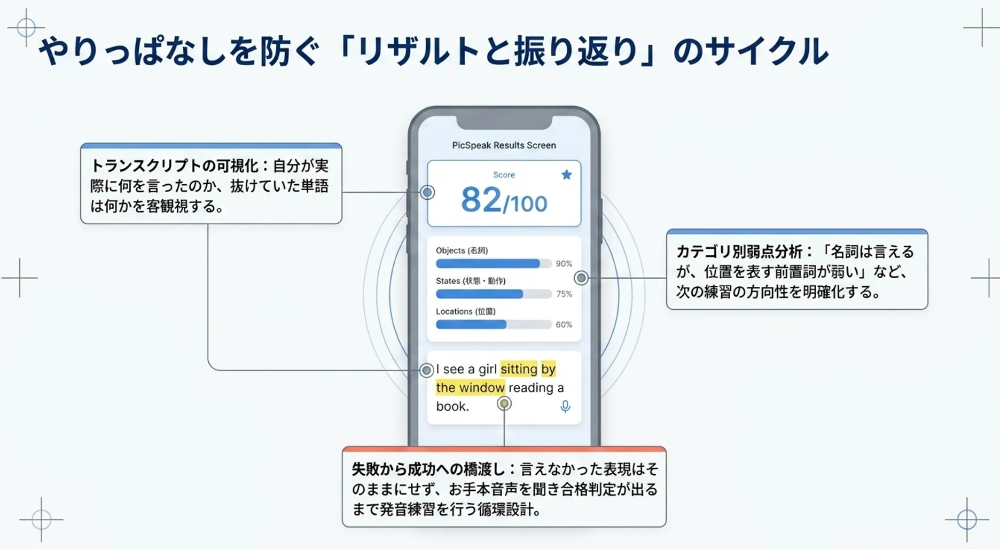
さらに、言えた表現と言えなかった表現をカテゴリ別に整理します。モノ、状態、動作、位置、推測、比較などに分けることで、生徒は自分の弱点を具体的に理解できます。「私は名詞は言えるけれど、動作が弱い」「場所を表す前置詞が苦手」。弱点が見えると、練習の方向が明確になります。
そして、言えなかった表現には発音練習の機能を用意しています。お手本の音声を聞き、自分で言い、合格判定が出るまで繰り返す。これは罰ではありません。言えなかったことを、次に言えるようにするための橋です。失敗を記録して終わるのではなく、失敗を次の成功の入口に変える。私は、この循環こそが学習アプリに必要な思想だと考えています。
12. Picture Descriptionは、英語教育を『評価』から『成長』へ戻す
私がPicture Descriptionに力を入れる理由は、スピーキング力を伸ばしたいからだけではありません。もっと根本的には、英語学習の経験を変えたいからです。多くの生徒にとって、英語は評価される科目です。もちろん評価は必要です。しかし、評価だけが前面に出ると、生徒は英語を使う前に怖くなります。
Picture Descriptionでは、まず「言ってみる」ことから始まります。完璧でなくてもよい。見えたものを言う。友達の言葉を聞く。もう一文足す。少し詳しくする。違う表現を試す。こうしたプロセスの中で、英語は少しずつ自分のものになります。評価は、学習者を選別するためではなく、成長を支えるために使われるべきです。PicSpeakのスコアやWPM、FOUNDのエフェクト、リザルト分析は、そのための形成的フィードバックです。
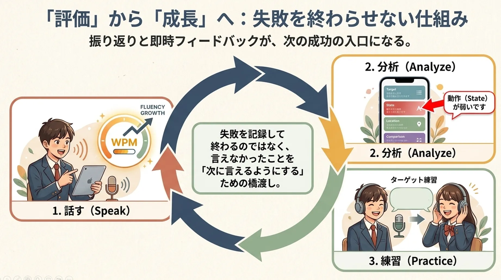
私は、教室で生徒の目が変わる瞬間を何度も見てきました。最初は小さな声で “dog” と言うだけだった生徒が、数分後には “The dog is running in the park.” と言う。友達に刺激されて “The dog looks happy.” と付け足す。たった一枚の写真から、教室に英語の連鎖が生まれる。そこには、正解を当てるだけの英語とは違う、生きた学びがあります。
私がPicSpeakで全国の学校や生徒に届けたいのは、この瞬間です。英語が得意な生徒だけが話す授業ではなく、英語が苦手な生徒も一語から参加できる授業。教師が一方的に説明する時間だけでなく、生徒自身が見て、考えて、言葉を生み出す時間。テストのためだけではなく、世界を英語で捉え直すための学び。Picture Descriptionは、その入口になります。
13. 言葉が生まれる瞬間を、すべての教室へ
一枚の写真には、無数の英語が眠っています。人がいる。動きがある。色がある。場所がある。感情がある。物語がある。まだ言葉になっていない意味が、画面の中で学習者を待っています。Picture Descriptionとは、その意味に学習者自身が気づき、自分の英語で取り出していく活動です。
私たちは、英語をもっと人間的なものとして教えることができます。文法を否定する必要はありません。単語学習を軽視する必要もありません。むしろ、それらを本当に使える力に変えるために、写真描写が必要なのです。文法は、目の前の世界を説明するためにある。単語は、自分の見たものを誰かに伝えるためにある。発音は、自分の声を相手に届けるためにある。そう感じられたとき、英語学習は暗記から表現へ変わります。
PicSpeakは、私の現場での問いから生まれました。なぜ、生徒は知識があるのに話せないのか。どうすれば、日本語に翻訳する前に英語が立ち上がるのか。どうすれば、失敗を恐れずに声を出せるのか。どうすれば、先生一人の努力に頼らず、全国の教室で継続できるのか。その問いに対する、私なりの答えがPicSpeakです。
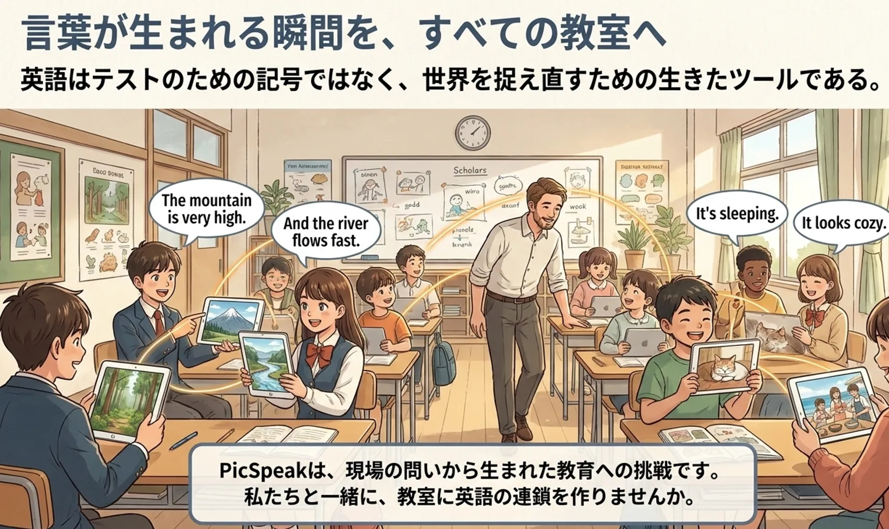
私は、Picture Descriptionが日本の英語教育にもっと広がるべきだと本気で信じています。なぜなら、それは特別な才能を持った生徒だけの活動ではないからです。小学生も、中学生も、高校生も、大人も、一枚の写真を前にすれば、何かを感じます。何かを見つけます。そして、支えがあれば、それを英語で言うことができます。
言葉が生まれる瞬間は、いつも小さいものです。
最初の一語。最初の短い文。
少し勇気を出した推測。友達の表現をまねした一文。
その小さな瞬間が積み重なって、「私は英語で伝えられる」という感覚が育ちます。PicSpeakが全国の学校で、その瞬間を一つでも多く生み出すことができたら、これほど嬉しいことはありません。
英語は、紙の上だけにあるものではありません。教室の中にも、写真の中にも、生徒の目の中にもあります。私たち教師の役割は、その英語が声になる瞬間に立ち会い、そっと背中を押すことです。Picture Descriptionは、そのための最もシンプルで、最も力強い方法の一つです。そしてPicSpeakは、その実践を誰でも始められる形にした、私の教育への挑戦です。
References
- DeKeyser, R. M., & Criado, R. (2013). Automatization, Skill Acquisition, and Practice in Second Language Acquisition. The Encyclopedia of Applied Linguistics.
- Levelt, W. J. M. (1989). Speaking: From Intention to Articulation. MIT Press.
- Mayer, R. E. (2002). Multimedia learning. Psychology of Learning and Motivation, 41, 85-139.
- Nation, P. (2007). The Four Strands. Innovation in Language Learning and Teaching, 1(1), 2-13.
- Paivio, A. (1986). Mental Representations: A Dual Coding Approach. Oxford University Press.
- Swain, M. (1985/1995). The Output Hypothesis and second language learning.
- Vygotsky, L. S. (1978). Mind in Society: The Development of Higher Psychological Processes.
- Koizumi, R. (2022). Assessing functional adequacy using picture description tasks with Japanese learners of English. JLTA Journal, 25, 60-79.
UoPeople M.Ed. 挑戦記：愛知県立高校の教室から世界へ、そして「評価」の真髄へ
— 2年間の学び、苦しみ、制度、そして日本の教育への還元 —
2022年8月、愛知県立豊田南高等学校で、国公立大学進学を目指す3年生の「習熟クラス」の担任として、日々受験指導に明け暮れていました。そんな私が、なぜ敢えてアメリカの大学であるUniversity of the People（UoPeople）の教育修士課程（M.Ed.）に飛び込み、地獄のような読書量と課題量に格闘することになったのか。そして、そこで得た「世界基準の教育」のリアルを、私の視点から伝えたいと思います。
この文章は、単なる留学記録ではありません。日本の伝統的な教室で「受験」という現実に立ち向かっていた一人の教員が、オンラインを通じて世界の教育者たちとぶつかり合い、共鳴し、ときには絶望しながら、日本の教育の未来を見つめ直した変容の記録です。ここでは、UoPeopleの制度、学習の仕組み、課題の重さ、Peer Assessmentの緊張感、Group Projectの混沌、そして私自身の教育観がどのように変わったのかを、できる限り正直に書き残します。
1. なぜ、豊田南高校の教室から「世界」を目指したのか
当時、私の目の前にいたのは、共通テストや二次試験に向けて必死に机に向かう生徒たちでした。習熟クラスということもあり、担任として進路に対するプレッシャーは相当なものでした。一分一秒を惜しんで問題集を解く彼らの姿を見ながら、私は常に自問自答していました。「今の日本の評価は、本当に彼らの将来を拓くものになっているだろうか」と。
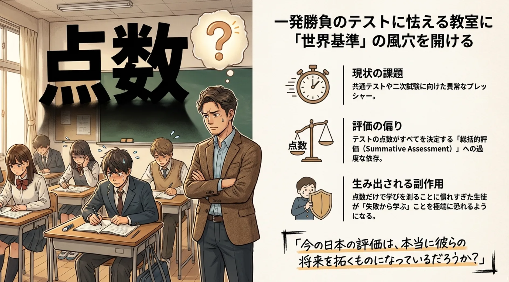
日本の高校教育、特に進学校においては、テストの点数がすべてを決定する「総括的評価（Summative Assessment）」の比重が非常に高いのが現実です。一発勝負のテストに怯え、点数という数字に一喜一憂する生徒たち。もちろん、入試制度の中で点数は避けられません。しかし、点数だけで学びを測ることに慣れすぎると、生徒は「失敗から学ぶ」という最も大切な経験を恐れるようになります。
私は、もっと彼らがリラックスして、自らの理解度を確認しながら「学びそのもの」を楽しめる評価のあり方はないのかと考えるようになりました。その答えを求めて、UoPeopleのM.Ed.課程、特に国際バカロレア（IB）とつながる理念を持つ教育プログラムに活路を見出したのです。それは、日本の公立高校という「内側」から、世界標準という「外側」の視点を取り入れるための、孤独で、しかし必要な挑戦の始まりでした。
今振り返ると、私が求めていたのは単なる学位ではありませんでした。欲しかったのは、自分の授業をもう一度疑うための言葉であり、生徒を見るまなざしを広げるための理論であり、日本の教室を外から眺め直すための足場でした。
2. UoPeopleという大学の仕組み：安いが、決して軽くない
UoPeopleは「tuition-free」、つまり伝統的な授業料を課さない大学として知られています。しかし、ここで誤解してはいけないのは、「授業料がない」ことと「学習が軽い」ことはまったく別だということです。UoPeopleでは、コースごとにAssessment Feeが必要であり、M.Ed.は13コース、合計39単位で構成されています。各コースは9週間で進みます。2026年時点の公式情報では、M.Ed.のCourse Assessment Feeは1コースあたり400ドル、13コースすべてをUoPeopleで履修する場合の目安は申請料を含めて5,260ドルとされています。ただし、費用は入学時期や大学の規定変更によって変わる可能性があるため、必ず最新のEnrollment AgreementやCatalogを確認すべきです。
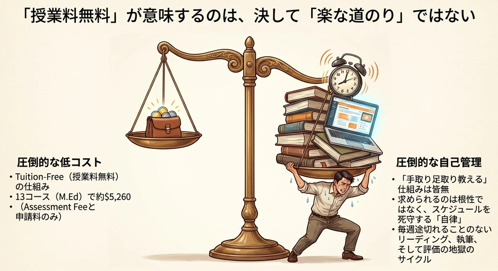
この制度は、世界中の学習者に高等教育への扉を開くという意味で非常に大きな価値があります。日本の大学院と比較しても、費用面のハードルはかなり低いと言えます。しかし、その代わりに求められるのは「自律」です。誰かが手取り足取り教えてくれるわけではありません。毎週のLearning Guideを読み、指定文献を読み、Discussionに投稿し、他者の投稿に返信し、Writing Assignmentを書き、Learning Journalで振り返り、さらにPeer Assessmentで他者の課題を評価する。これを9週間、ほぼ途切れなく続けます。
UoPeopleの学習モデルの中心には、peer-based learningがあります。つまり、教授から一方的に講義を受けるのではなく、学生同士が読み、書き、評価し合い、互いの視点から学びを深める仕組みです。最初はこの仕組みに戸惑いました。なぜなら、日本の大学や教員研修では、評価者は基本的に「先生」であり、学生が学生を評価することに強い違和感があったからです。しかし、続けていくうちに気づきました。Peer Assessmentは、他人の文章を採点する作業ではなく、自分の理解を鏡に映す作業なのです。
UoPeopleの9週間を一言で言うなら「毎週が小さな最終試験」
| 学習要素 | 何をするか | 精神的な負荷 |
|---|---|---|
| Reading Assignment | 学術論文、教科書、オンライン資料を読み、理論の背景を理解する。 | 英語で読み切る体力と、内容を批判的に捉える力が必要。 |
| Discussion Assignment | 問いに対して自分の考えを投稿し、他者の投稿に返信する。 | 世界中の教育者の視点に触れる一方、投稿の質が常に問われる。 |
| Writing Assignment | APAスタイルで論理的に英文レポートを書く。 | 最も時間がかかる。構成力、引用、英語表現、締切管理がすべて必要。 |
| Learning Journal | その週の学びや自己の成長を振り返る。 | 単なる感想ではなく、理論と実践を結び付ける必要がある。 |
| Peer Assessment | 他者の課題を評価し、ルーブリックに基づいてフィードバックする。 | 評価する責任と、評価される緊張感が同時にある。 |
| Final / Group Project | 最終試験、最終レポート、またはプロジェクトに取り組む。 | 9週間の蓄積が問われ、ここでの失敗は成績に直結する。 |
3. 凄まじいアウトプットの洗礼：読んで、書いて、また書く
「Tuition-Free」という言葉の響きとは裏腹に、その学習内容は控えめに言って凄まじいものでした。M.Ed.課程では、1コースにつき週15〜20時間の学習が求められると言われます。しかし、実際の体感はそれ以上でした。特に英語を母語としない私にとって、学術論文を読み、内容を理解し、さらに自分の実践と結びつけて英語で論じる作業は、想像以上に重いものでした。
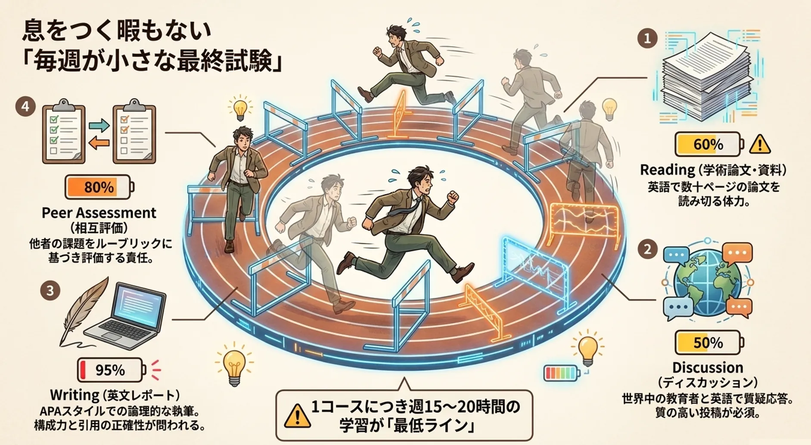
毎週、指定される学術論文は数本。それも一本30ページから100ページ近いものが出されることもあります。これらをただ読むだけでは不十分です。内容を要約し、自分の教育現場に照らして批判的に分析し、APAスタイルという厳格な学術形式で執筆しなければなりません。1学期9週間で書き上げる英文の総量は膨大でした。日本語の感覚で言えば、毎週小論文を書き、それを約2か月間続けるようなものです。
仕事を終えて帰宅し、家のことを済ませ、ようやく机に向かう頃には、すでに体力はほとんど残っていません。それでも画面の向こうには未読の論文があり、未完成のDiscussionがあり、提出期限が赤く迫っているWriting Assignmentがあります。Googleドキュメントの白い画面を見つめながら、「なぜ自分はこんなことを始めてしまったのだろう」と何度も思いました。正直、心は何度も折れそうになりました。いや、たまに本当に折れていました（笑）。
しかし、このアウトプット量は、私を確実に変えました。以前の私は、授業実践を語るときに「経験上こう思う」「生徒の反応を見るとこうだ」と言うことが多かったと思います。UoPeopleで鍛えられた後は、そこに「理論ではどう説明できるか」「研究では何が示されているか」「他国の教育者ならどう見るか」という問いが自然に加わるようになりました。経験だけで語らない。理論だけでも語らない。その両方を行き来する思考の筋肉が、少しずつ鍛えられていったのです。
4. 兼業・育児・校務・学習を支えた究極のルーティン
当時は勤務校の業務に加え、英文法解説書「Factbook」のアニメーション動画を制作する兼業もしており、時間は常に「マイナス」の状態でした。忙しい人が勉強時間を作るというより、すでに足りない時間をさらに削り出す感覚です。それでも2年間続けるために、私はいくつかのルールを徹底しました。
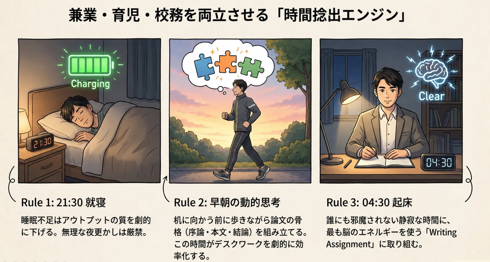
まず、睡眠を削らないこと。これは本当に大切です。大学院の課題が忙しくなると、つい夜更かしで対応したくなります。しかし、睡眠不足の頭で論文を読んでも理解は浅く、英文を書いても構成が崩れます。翌日の仕事にも悪影響が出ます。だから私は、どれだけ課題が残っていても21時30分には寝ることを原則にしました。
次に、朝4時30分に起きること。朝の脳は、驚くほど静かです。メールも通知も少なく、家族もまだ起きていない。誰にも邪魔されない時間に、最も重い課題であるWriting Assignmentに取り組みました。夜に無理やり書いた1000語より、朝に集中して書いた500語の方が質が高いことを何度も実感しました。
そして、早朝のウォーキングです。歩きながら、その日に書くべき論文の構成を頭の中で組み立てました。序論では何を問題提起するか、本文ではどの理論とどの実践をつなぐか、結論では何を主張するか。また、勤務校の授業デザイン（アプローチや国際交流イベント計画）などについて歩くことで思考がほぐれ、机に座ったときには文章の骨格や授業デザインがある程度できている状態になります。この「動的な思考時間」は、後のデスクワークを劇的に効率化してくれました。
この2年間で学んだことは、努力とは単に根性で長時間耐えることではないということです。努力を続けるためには、続けられる仕組みを作らなければなりません。私にとって、それが早寝早起き、早朝ウォーキング、そして課題を小さく分解することでした。
-
✔
21:30就寝：睡眠不足はアウトプットの質を劇的に下げる。
-
✔
04:30起床：一日の最初に最も重い課題へ取り組む。
-
✔
早朝ウォーキング：論文構成を歩きながら組み立てる。
-
✔
週の前半にReading、半ばにDiscussion、後半にWritingを進める。
-
✔
完璧主義を捨て、まず提出可能な形まで持っていく。
5. 9週間の死闘：締切は、想像以上に冷たい
これから受講を考えている方に最も伝えたいリアルがあります。それは、UoPeopleの学習が徹底した成果主義と締切管理の上に成り立っているということです。UoPeopleの1コースは9週間単位で構成されていますが、この期間は文字通り「毎週が勝負」です。
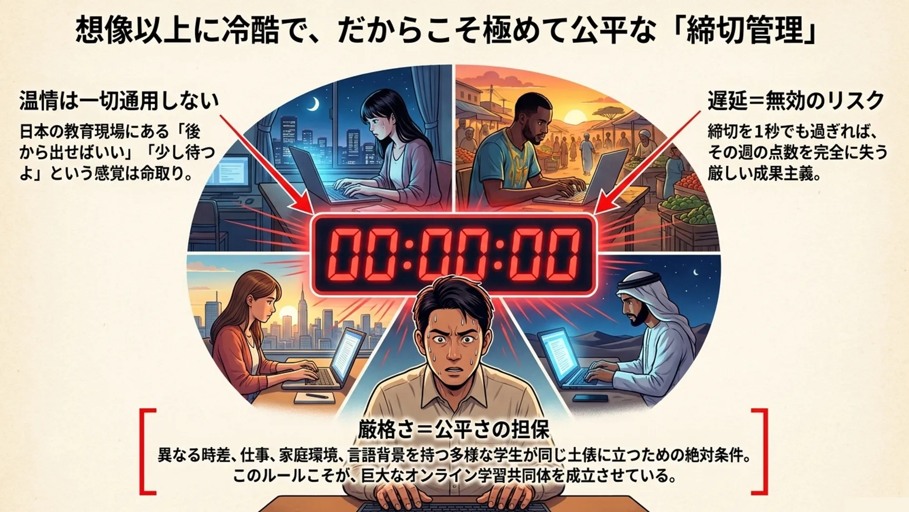
日本の教育現場には、良くも悪くも「後から出せばいいよ」「事情があるなら少し待つよ」という温情があります。もちろん、それは生徒を支えるために必要な場合もあります。しかし、UoPeopleではその感覚を持ち込むと危険です。課題の締切を過ぎれば、その週の点数を失う可能性があります。Discussionを投稿しなければ参加が記録されません。Peer Assessmentを怠れば、自分自身の成績にも影響が出ます。誰かが何度もリマインドしてくれるわけではありません。
この厳しさは、最初は冷たく感じました。しかし、同時に非常に公平でもあります。世界中から集まる学生が、異なる時差、仕事、家庭環境、言語背景の中で同じ条件に立ちます。だからこそ、ルールは明確でなければならない。締切が厳格であることは、単なる管理ではなく、オンライン大学という巨大な学習共同体を成立させるための土台でもあるのです。
私は何度も、提出期限の数時間前に心臓が縮むような思いをしました。画面の右上に表示される締切時刻を見ながら、最後の文献引用を整え、APAのカンマやピリオドを確認し、Submitボタンを押す。その瞬間の安堵感は、受験指導で生徒の出願書類を出し終えたときの感覚に似ていました。ただ違うのは、これは毎週やってくるということです。
6. EDUC 5440でのパラダイムシフト：「評価」は選別ではなく成長のためにある
私が履修した科目の中で、最も衝撃を受け、かつ楽しかったのが「EDUC 5440: Assessment and Evaluation」です。このコースこそが、私の教育観を根底から変えるきっかけになりました。
Discussion AssignmentやPeer Assessmentを通じて、世界中の先生たちとつながりました。アフリカの農村部でリソース不足と戦う先生、北米のICT環境が整った学校の先生、中東のインターナショナルスクールの先生、アジアの受験競争に悩む先生。それぞれが置かれた状況はまったく違います。しかし、彼らの投稿を読みながら、私は一つの共通点に気づきました。どの国の先生も、「どうすれば生徒がよりよく学べるか」を真剣に考えているのです。
特に驚いたのは、国によって「評価」に対する前提が大きく異なることでした。ある国の先生は公平性を極限まで追求していました。別の国の先生は、生徒の心理的安全性を最優先にしていました。また別の先生は、評価を保護者や地域社会に説明する責任について悩んでいました。評価とは単に点数をつけることではありません。評価には、文化、制度、価値観、そして教師の生徒観が深く反映されます。
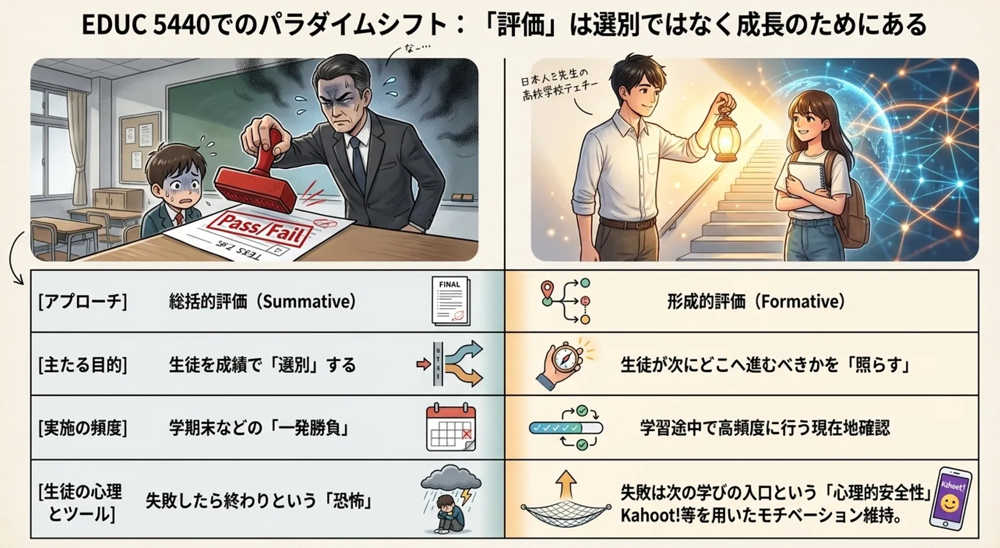
このコースで学んだ最大の収穫は、形成的評価（Formative Assessment）と総括的評価（Summative Assessment）の使い分けです。日本の現状では、評価が「一発勝負」のテストに偏りすぎており、生徒は常に「失敗したら終わり」という恐怖の中にいます。一方で、グローバルな教育実践では、学習の途中で頻繁に行い、生徒が自分の現在地を確認するための形成的評価が重視されます。
Kahoot!、Wayground、Blooketといったツールがなぜ世界中で愛用されているのか。以前の私は、それらを「授業を盛り上げるためのゲーム」と見ていた部分がありました。しかし、今は違います。これらは単なる遊びではなく、生徒の恐怖心を取り除き、学びへのモチベーションを保ち、教師が即時に理解度を把握するための戦略的な評価ツールです。生徒が笑顔で答えながら、自分の弱点に気づく。間違えても場が凍らない。むしろ、間違いが次の学びの入口になる。そのような評価の場を、私はもっと日本の教室に増やしたいと思うようになりました。
評価は、生徒を選別するためだけのものではありません。評価は、生徒が次にどこへ進めばよいかを照らす灯りであるべきです。EDUC 5440を通じて、私はそのことを理論として学び、自分の教室で実践したいという強い確信に変えました。
7. Edutopiaとオンラインライブラリー：理論を明日の教室へつなぐ
課題を作成する上で、大学のオンラインライブラリーで大量の論文を読み込みました。しかし、それと並行して私が徹底的に活用したのがEdutopiaです。Edutopiaは、世界中の先生たちが実際に教室で行っている革新的な取り組みを紹介するリソースであり、理論と実践の橋渡しをしてくれる存在でした。
学術論文は、教育の背景にある理論やエビデンスを与えてくれます。一方で、現場の教師にとって重要なのは、「では明日の授業で何を変えるのか」という問いです。Edutopiaには、その問いに向き合うための具体例がありました。形成的評価、協働学習、心理的安全性、プロジェクト型学習、テクノロジー活用。どの記事を読んでも、UoPeopleで学んだ理論を自分の教室に落とし込むヒントがありました。
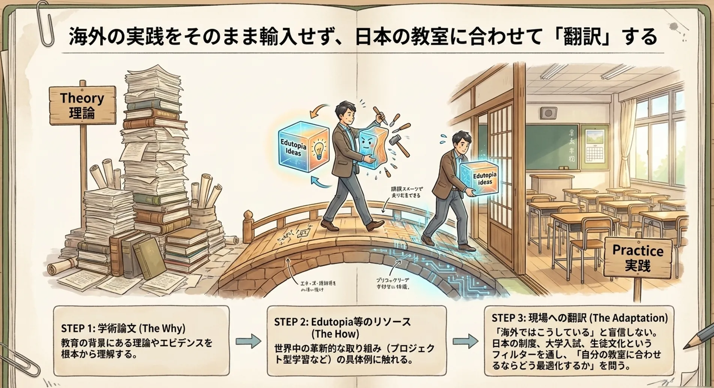
私にとって大切だったのは、海外の実践をそのまま輸入することではありませんでした。日本の高校には、日本の制度、日本の入試、日本の生徒文化があります。だからこそ、「海外ではこうしている」ではなく、「この考え方を日本の教室に合わせるならどうなるか」と考える必要があります。UoPeopleでの学びは、海外の正解を探す旅ではありませんでした。むしろ、日本の教室に戻ったときに、自分の実践をより深く問い直すための旅だったのです。
8. Group Projectという生存競争：多国籍チームのカオスをどう生きるか
UoPeopleを受講する上で、多くの学生が最大の難所として挙げるのがGroup Projectです。教授によって世界中の受講者がランダムにチーム分けされ、一つの成果物を作り上げる課題。これは、まさにカオスの極みでした。
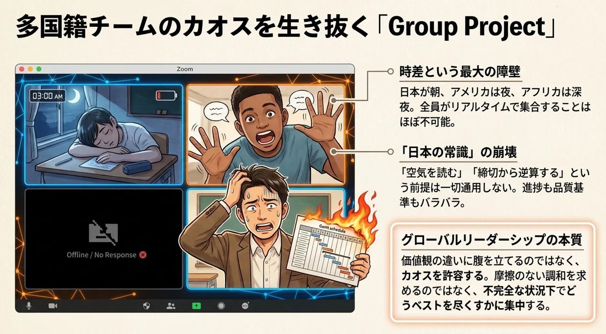
まず、時差が最大の敵です。日本が朝のとき、アメリカは夜、中東は深夜、アフリカは別の時間帯です。全員が決まった時間にZoomに集まることなど、ほぼ不可能です。私は受講中に一度だけ全員で集まることができましたが、それは奇跡に近い出来事でした。結局、連絡手段はWhatsAppやMessengerが中心となります。通知が鳴り止まない日もあれば、逆に数日間誰も発言しないこともあります。
次に、仕事の進め方が違います。日本の学校現場では、ある程度「空気を読む」「締切から逆算する」「全体のバランスを考える」ことが重視されます。しかし、多国籍チームではその前提は通用しません。役割分担を決めても、期日を守らないメンバーがいます。逆に、非常に早く作業を進めるメンバーもいます。プレゼンテーションの構成、デザイン、使用するアプリ、引用の仕方、文章のトーンまで、国や個人によって驚くほど違います。
当初は、正直かなりイライラしました。「なぜみんな計画通りに動かないのか」「なぜ返信がないのか」「なぜこの完成度で提出しようとしているのか」と思ったこともあります。しかし、ある時から考えを変えました。この違いに腹を立てるのではなく、「このカオスを楽しむ」こと。予期せぬトラブルも含めてプロジェクトの一部だと捉え、不完全な状況下でベストを尽くす。それこそが、多国籍チームを率いるグローバルリーダーシップの本質なのだと気づいたのです。
日本の教室では、私たちはよく「協働学習」を語ります。しかし、本当の協働とは、気の合う仲間とスムーズに作業することだけではありません。価値観も時間感覚も文章の書き方も違う相手と、摩擦を抱えながら、それでも一つの成果物に向かうことです。Group Projectは苦しかったですが、その苦しさこそが、協働の本質を私に教えてくれました。
9. Peer Assessment：評価される痛み、評価する責任
UoPeopleの大きな特徴の一つがPeer Assessmentです。学生は自分の課題を提出するだけでなく、他の学生の課題をルーブリックに基づいて評価します。この仕組みは、最初はかなり怖いものでした。自分の英文が、世界のどこかにいる誰かに読まれる。そして、点数とコメントが返ってくる。日本の教員として評価する側には慣れていても、評価される側に立つ経験は、想像以上に緊張感がありました。
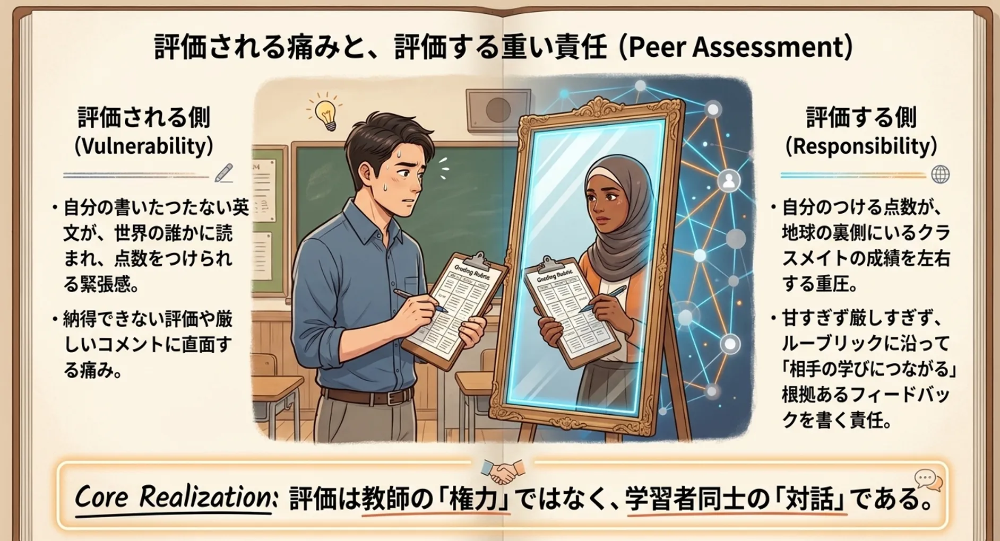
時には、納得できない評価を受けることもあります。丁寧に書いたつもりの課題に低い点がついたり、コメントが短すぎて理由が分からなかったりすることもありました。逆に、自分が他者の課題を評価するときには、「この点数は相手の成績に影響する」という責任を感じました。甘すぎてもいけない。厳しすぎてもいけない。ルーブリックを読み込み、根拠を示し、相手の学びにつながるコメントを書かなければなりません。
この経験は、日本の教室での評価を考える上で非常に重要でした。生徒がテストを返却されるとき、どれほど不安な気持ちでいるのか。コメント一つで、生徒が勇気づけられることもあれば、逆に心を閉ざしてしまうこともある。評価は教師の権力ではなく、学習者との対話であるべきだと、Peer Assessmentを通じて身体で理解しました。
また、他者の課題を読むことは、自分の学びを深める最良の方法でもありました。同じ文献を読んでいても、国や現場が違えば見えるものが違います。自分では思いつかなかった観点に出会い、「なるほど、そういう解釈もあるのか」と何度も驚かされました。Peer Assessmentは、評価の制度であると同時に、世界中の教室をのぞき見る窓でもありました。
10. 履修科目リスト：修羅の道の全貌
私が卒業までに駆け抜けたM.Ed.課程の13コースを記録しておきます。各コースは9週間、手加減なしの真剣勝負でした。科目名だけを見ると整然としていますが、その背後には毎週の読書、議論、執筆、評価、そして締切との戦いがありました。
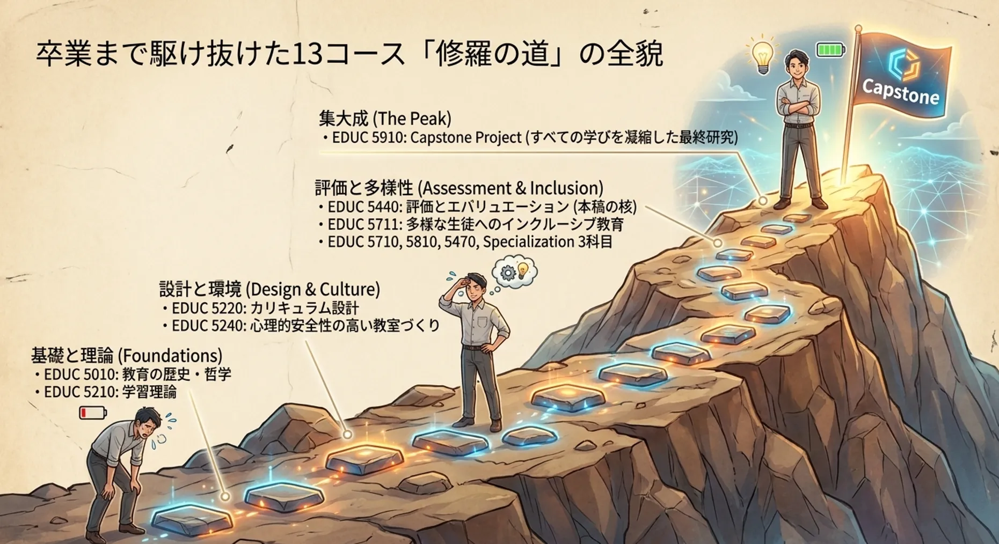
| コース番号 | 英語科目名 | 内容のハイライトと学び |
|---|---|---|
| EDUC 5010 | Education in Context: History, Philosophy, and Sociology | 教育の根源を哲学的に問い直す。なぜ我々は教えるのかという問いへの入口。 |
| EDUC 5210 | Learning Theory and Implications for Instruction | 脳科学と心理学から学習を理解し、生徒の頭の中で何が起きているかを考える。 |
| EDUC 5220 | Curriculum Design and Instructional Decision Making | カリキュラム作成の裏側にある意図を分析し、教科書を超える設計力を養う。 |
| EDUC 5240 | Creating Positive Classroom Environments | 心理的安全性の高い教室を作るための学級経営術。 |
| EDUC 5440 | Assessment and Evaluation | 評価を恐怖から希望に変える実践。本稿の核となった科目。 |
| EDUC 5710 | Understanding Barriers to Learning | 学習障害や環境要因など、学習を妨げる要因を科学的に理解する。 |
| EDUC 5711 | Teaching for Diverse and Inclusive Classrooms | 多様な生徒一人ひとりに向き合う方法を学ぶ。誰一人取り残さない教育。 |
| EDUC 5810 | Living and Learning Globally | グローバル市民としての教育者の役割を考える。IBの理念とも深く関連。 |
| EDUC 5470 | Research in Education | 教育を研究として捉え、エビデンスを収集・分析する視点を得る。 |
| EDUC 5910 | Capstone Project | すべての学びを凝縮した最終研究。自身の教育実践を論文にまとめる。 |
| Specialization | Secondary Specialization Courses | 中等教育に特化した専門的な指導技術を深める3科目。 |
11. UoPeopleで学んだ「世界基準」とは何か
UoPeopleで学ぶ前、私は「世界基準」という言葉を、どこか遠いものとして捉えていました。英語で授業を受け、海外の理論を学び、国際的な教育制度を理解すること。それが世界基準だと思っていたのです。しかし、2年間を終えた今、私の考えは少し違います。
世界基準とは、完璧な英語を話すことではありません。海外の教育方法をそのまま真似ることでもありません。世界基準とは、自分の教室を、世界の多様な視点の中に置き直す力です。自分の当たり前を疑い、他者の当たり前に耳を傾け、その上で自分の現場に合った答えを作り直す力です。
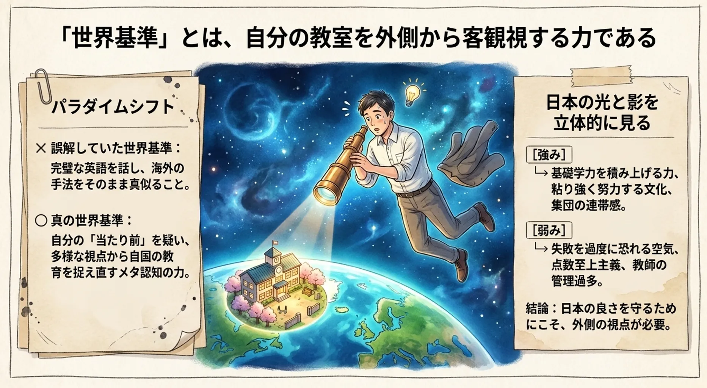
たとえば、日本の受験指導には強みがあります。基礎学力を積み上げる力、粘り強く努力する文化、クラス全体で目標に向かう雰囲気。これらは決して否定されるべきものではありません。一方で、失敗を恐れる空気、点数だけで自分の価値を測ってしまう危うさ、教師がすべてを管理しすぎる傾向もあります。UoPeopleでの学びは、こうした日本の教育の光と影を、より立体的に見せてくれました。
私は、世界の教育を学んだからといって、日本の教育を捨てたいわけではありません。むしろ、日本の教育の良さを守るためにこそ、世界の視点が必要だと思っています。外から見なければ、自分たちの強みも弱みも見えません。UoPeopleは、私にその外側の視点を与えてくれました。
12. これから挑戦する人へ：覚悟と希望を持って扉を叩いてほしい
UoPeopleでの修士課程は、決して楽な道ではありません。仕事、家事、育児、兼業、そして膨大な課題。どれか一つを疎かにすれば、すぐに足元から崩れていくようなバランスの上に成り立つ生活でした。画面の前で眠気と戦いながら論文を読み、締切直前に震える手でSubmitボタンを押し、Group Projectの返信が来ないことに焦り、Peer Assessmentのコメントに一喜一憂する。そんな日々の連続でした。
それでも、私はこの経験をして本当によかったと思っています。愛知県の教室という小さな世界にいた私に、世界という窓を大きく開けてくれたのは、間違いなくUoPeopleでした。世界中の教育者が、それぞれの国の現実の中で苦しみながら、それでも生徒の未来を信じている。その姿に触れたことは、私にとって大きな財産です。
「評価に怯える生徒を救いたい」「世界の教育者と肩を並べて議論したい」「日本の教育を内側から変えたい」。そんな純粋な動機があるのなら、ぜひこの扉を叩いてみてください。ただし、覚悟は必要です。UoPeopleは、安いから楽な大学ではありません。オンラインだから簡単な大学でもありません。むしろ、オンラインだからこそ、自分を律する力が求められます。
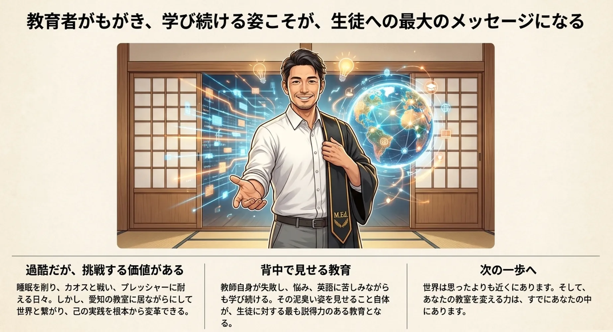
最後に、私がこの2年間で最も強く感じたことを書いておきます。教育者が学び続ける姿は、生徒への最も強いメッセージになります。教師が失敗し、悩み、英語に苦しみ、それでも学び続ける。その姿を見せること自体が、生徒にとっての教育になるのです。私は今、日本の教室でこの学びを還元し続けています。評価を怖がっていた生徒たちが、Kahoot!やBlooket、さらには自分が開発したアプリケーションを通じて笑顔で自分の理解度を確認し、主体的に学び始める姿を見るたび、あの地獄のような夜も、早朝のウォーキングも、すべてが無駄ではなかったと心から思います。
世界は、思ったよりも近くにあります。そして、あなたの教室を変える力は、すでにあなたの中にあります。UoPeopleでの2年間は、その力に気づくための、厳しくも温かい旅でした。
References (UoPeople Information)
- University of the People, Graduate Catalog: UoPeople’s Study Process / Components of the Study Process.
- University of the People, Graduate Catalog: Master of Education in Advanced Teaching curriculum and degree requirements.
- University of the People, Enrollment Agreement / Program Information Addendum: M.Ed. assessment fee and estimated total fees.
- University of the People, Graduate Catalog: Vision, Mission, Goals, Objectives, Values.
Global Classroomについて
世界をひとつの教室にする、教師たちの小さな挑戦
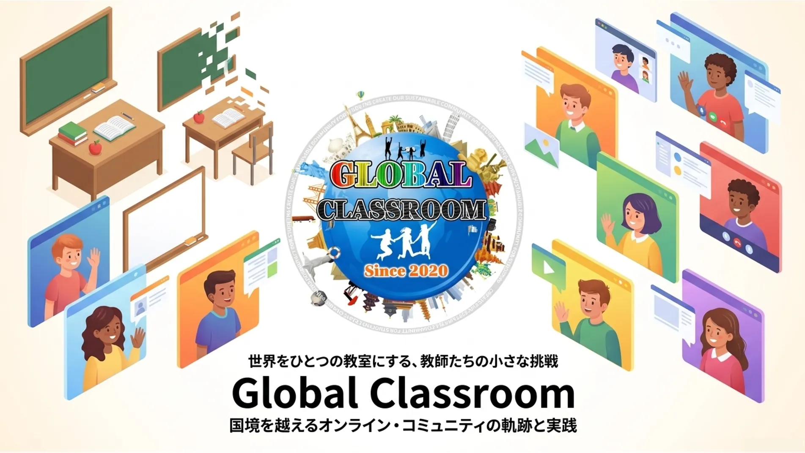
Global Classroomは、世界中の学校、大学、語学学校、教育機関で働くボランティアの教師たちによって運営されている国際的なオンライン・コミュニティです。参加するために特別な資格は必要ありません。必要なのは、インターネット環境と、世界の誰かと出会ってみたいという小さな好奇心だけです。
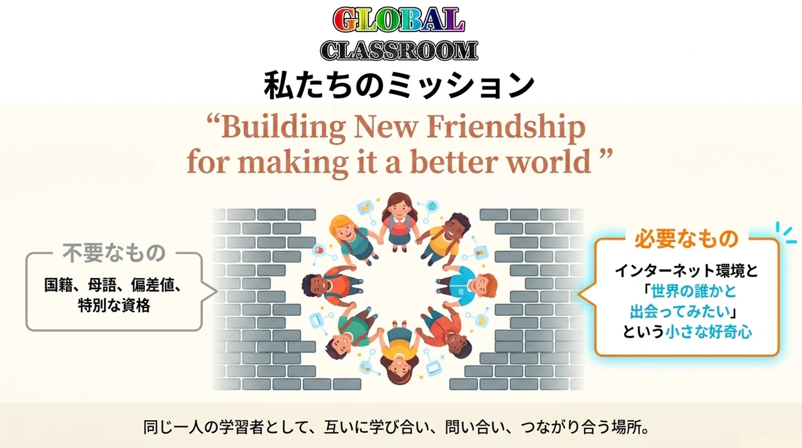
私たちが掲げている最大の目的は、“Building New Friendship for making it a better world” です。これは単なるスローガンではありません。国籍、母語、文化、宗教、学校制度、生活環境が異なる生徒たちが、オンライン上で出会い、話し、笑い、考え、時には戸惑いながらも互いを知っていく。その積み重ねが、よりよい世界を作るための最初の一歩になると私たちは信じています。
英語教育の現場では、「英語を学ぶこと」がしばしばテストの点数や入試対策と結び付けられます。もちろん、文法や語彙、読解力、資格試験の力を育てることは大切です。しかし、言語の本質はそこだけにあるわけではありません。言語とは、人と人が出会い、相手の考えを知り、自分の気持ちを伝え、互いの存在を認め合うための道具です。Global Classroomは、その本来の言語の意味を、生徒たちが実際の体験を通して学ぶための場です。
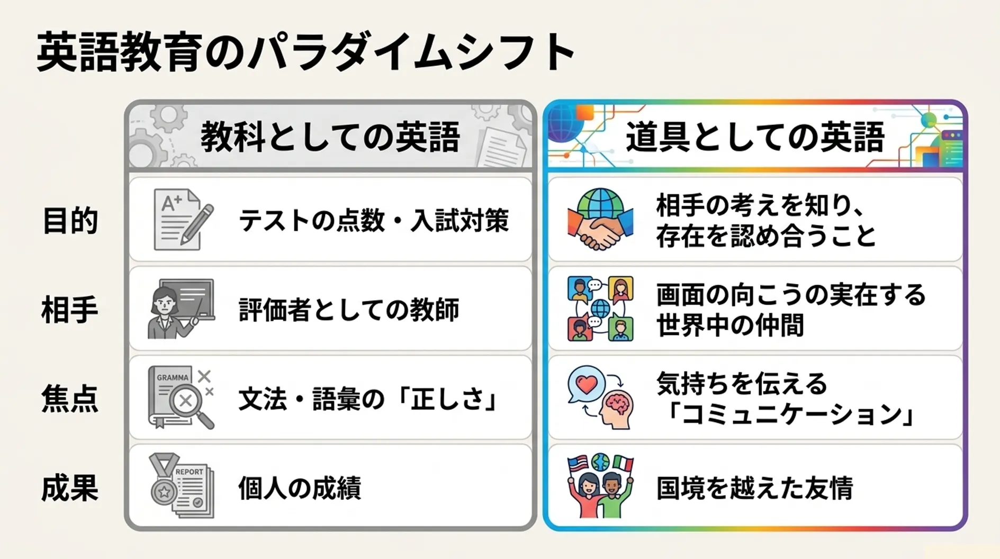
OECDのPISA 2018では、これからの時代に必要な力として「グローバル・コンピテンス」が示されました。そこでは、ローカル・グローバル・異文化的な課題を理解し、他者の視点や世界観を尊重し、異なる文化背景を持つ人々と適切かつ効果的に関わり、持続可能な社会のために行動する力が重視されています。Global Classroomが目指しているものは、まさにこのグローバル・コンピテンスの実践的な育成です。
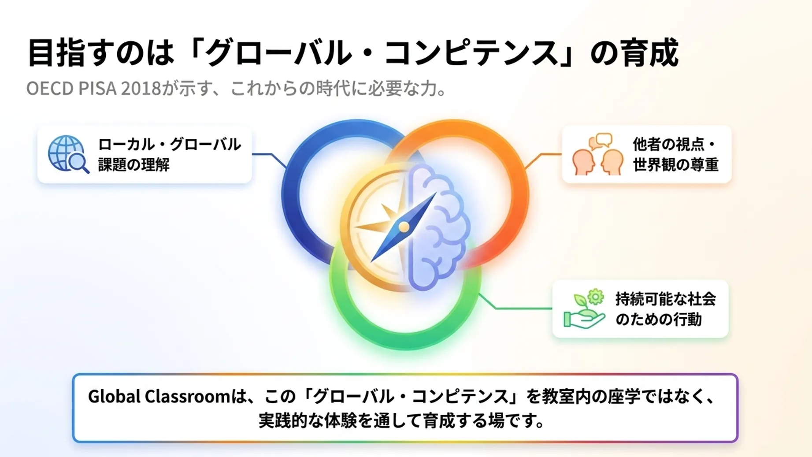
Mystery Skypeから始まった、世界とつながる授業
Global Classroomの原点には、私自身が英語の授業内で取り組んできたMystery Skypeがあります。Mystery Skypeとは、もともとMicrosoftの教育コミュニティ “Skype in the Classroom” の中で広がった国際交流型の学習活動で、Skypeというインターネット通話・ビデオ通話サービスを使い、世界のどこかにいる相手校とつながる活動です。生徒たちは相手の国や地域を直接聞くのではなく、英語で質問をしながら、少しずつ相手の場所を推測していきます。
この活動の魅力は、英語が突然「教科」ではなく「必要な道具」に変わる瞬間にあります。普段は教室の中で練習している英語表現が、画面の向こうにいる本物の相手とつながった瞬間、生徒たちにとって意味を持ち始めます。質問を考えること、相手の答えを聞き取ること、地図を見ながら推測すること、チームで相談すること。そのすべてが、英語を使う明確な目的になります。
私は、この活動を通して、生徒たちが世界とつながる素晴らしさを体験し、世界に、言語に、そして何より自分自身の変化に興味を持ち始める姿に何度も出会いました。英語が得意な生徒だけが輝くわけではありません。地図が好きな生徒、質問を考えるのが得意な生徒、相手の表情をよく見る生徒、仲間を励ます生徒。それぞれが役割を持ち、世界との対話の中で自分の居場所を見つけていくのです。
なお、Skypeは2025年5月にサービスが終了し、現在はMicrosoft Teams Freeへの移行が案内されています。しかし、Mystery Skypeが教育現場にもたらした価値は、特定のアプリに限定されるものではありません。重要なのは、ツールそのものではなく、ICTを使って教室の壁を越え、生徒が世界と出会う設計にあります。
パンデミックが奪ったもの、そして生まれたもの
2020年3月、新型コロナウイルスの感染拡大により、世界中の学校が突然閉鎖されました。留学、海外研修、姉妹校交流、修学旅行、国際イベント。これまで生徒たちにとって貴重だった国際交流の機会は、次々と失われていきました。英語教師として、私は強い危機感を抱きました。
「世界とつながる経験を、生徒たちから奪ったままでよいのだろうか。」
そう考えた私は、Facebook上の教育者コミュニティで声を上げました。国境を越えて、生徒たちが安全に、継続的に、そして気軽に出会えるオンラインの場を作れないだろうか。同じ思いを持った教師たちが少しずつ集まり、その小さな呼びかけが、現在のGlobal Classroomへとつながっていきました。
私がこのコミュニティをGlobal Classroomと名付けたのは、単に「世界中の生徒が集まる教室」という意味だけではありません。私が思い描いていたのは、国境、学校名、偏差値、英語力、家庭環境といった目に見えない壁を少しだけ低くし、世界中の生徒が同じ一つのVirtual Roomに入れるような場所でした。そこでは、日本の高校生も、台湾の生徒も、インドネシアの大学生も、エジプトの語学学校の学習者も、同じ一人の学習者として参加します。誰かが先生で、誰かが評価される側という関係ではなく、互いに学び合い、問い合い、つながり合う一つの教室。それがGlobal Classroomという名前に込めた思いです。
パンデミックは多くの教育機会を奪いました。しかし同時に、オンラインだからこそ可能になる新しい教育の形も生み出しました。Global Classroomは、その時代の制約の中から生まれた、教師たちの希望の実践だったと言えます。
小さな交流から、5000人を超える国際コミュニティへ
最初のGlobal Classroomは、とても小さな活動でした。授業内で数名のゲスト教師に参加してもらい、Mystery Skypeに近い形で、生徒たちが英語を使って交流するところから始まりました。参加者が少ないうちは、全員が一つの画面上で話し、全体で質問し合う形式でも十分に機能していました。
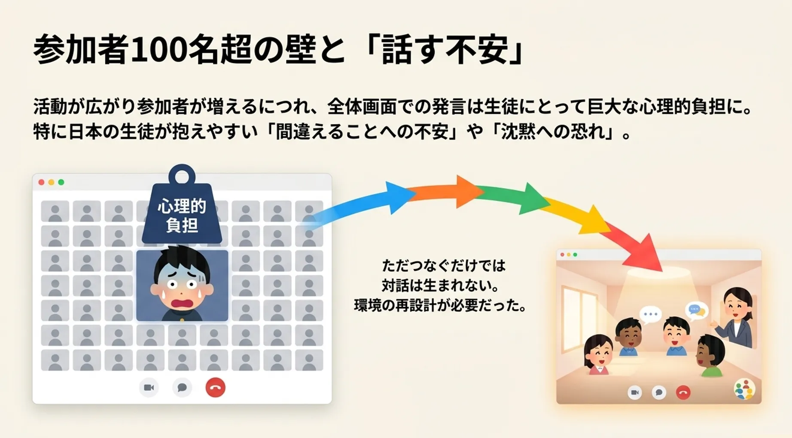
しかし、活動が広がるにつれて、参加者の数は30名を超えるようになりました。そこで、Global ClassroomのCo-founderのメンバーたちと話し合い、ZoomのBreakout Room機能を活用して、小さなディスカッショングループに分ける形式に変更しました。さらに、それぞれのBreakout Roomには各国の教師がFacilitatorとして入り、生徒たちの会話を支援する役割を担うことにしました。
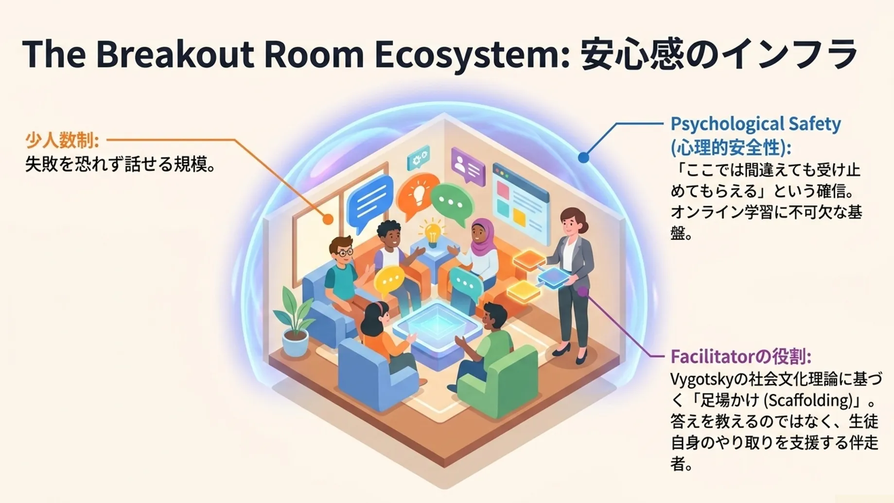
この仕組みは、Global Classroomの成功にとって非常に重要でした。大人数の前で英語を話すことは、多くの生徒にとって大きな心理的負担になります。特に日本の生徒は、間違えることへの不安、沈黙への恐れ、発音への自信のなさを抱えやすい傾向があります。しかし、少人数のBreakout Roomに分かれ、そこに安心できる大人のFacilitatorがいることで、会話へのハードルは大きく下がります。
この設計は、教育学的にも意味があります。オンライン学習においては、単に接続環境を用意するだけでは十分ではありません。参加者が「ここでは話してもよい」「間違えても受け止めてもらえる」と感じられる心理的安全性が必要です。また、Vygotskyの社会文化理論が示すように、学習は他者との相互作用の中で発達します。Facilitatorは答えを教える存在ではなく、生徒たちが自分たちの力でやり取りできるように支える足場かけの役割を果たしています。
現在もこの形式は続いています。2026年現在、Global Classroomには毎回100名を超える参加者が集まります。Facebookの先生たちのコミュニティ参加数は５３００人を超えています。生徒たちは、新しい国の友達、新しい話題、新しい価値観との出会いを求めて参加してくれます。これは、単なる一回限りのイベントではなく、継続的な学習コミュニティとしてGlobal Classroomが機能していることを示しています。
活動の流れと設計
Global Classroomでは、毎回ディスカッションのトピックを事前に決めています。トピックは、Facebookのグループコミュニティや公式Instagramを通じて、およそ1週間半前に告知します。その後、参加を希望する生徒を担当している先生にRegistration FormとしてGoogle Spreadsheetを送り、参加者情報を集約します。
先生方は、決められたBreakout Roomに生徒の名前を入力します。もちろん、実際にセッションが始まると、Zoomの操作に慣れていない生徒が違う部屋に入ってしまうこともあります。予定していた部屋と違う場所に行ってしまったり、名前の表示が違っていたり、マイクが入らなかったりすることもあります。しかし、こうした小さな混乱もまた、国際的なオンライン活動のリアルな一部です。完璧に整った環境ではなく、少し不完全で、だからこそ人と人が助け合う余地がある。その柔らかさもGlobal Classroomらしさの一つだと思っています。
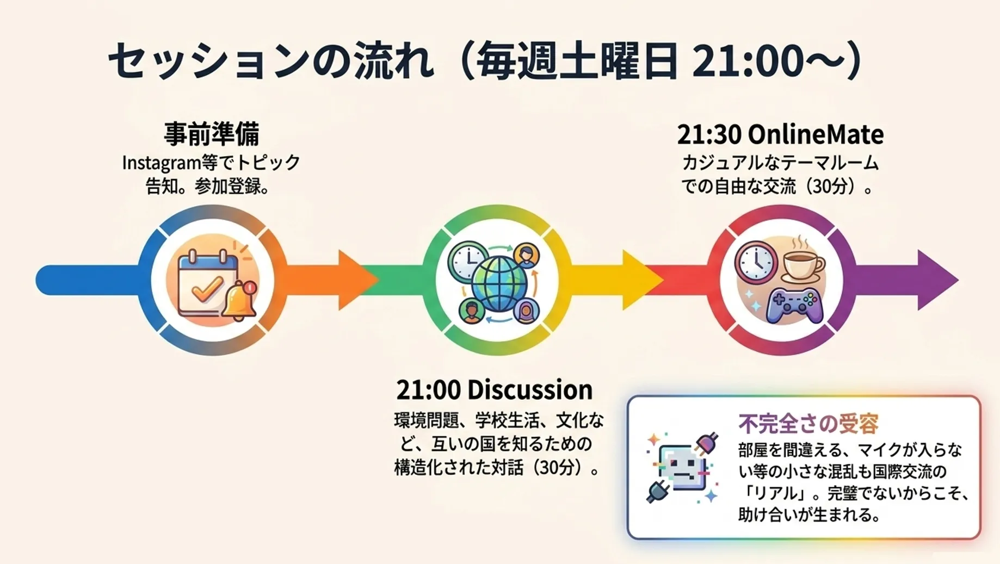
セッションは、毎週土曜日の日本時間21時から22時まで行っています。前半の30分は、事前に決められたテーマについてのディスカッションです。例えば、学校生活、将来の夢、環境問題、文化、食べ物、教育、平和、テクノロジーなど、生徒たちが自分の経験や考えを語りやすく、同時に相手の国や文化を知るきっかけになるテーマを選びます。
後半の30分は、OnlineMateという活動です。OnlineMateでは、生徒たちがBreakout Roomに割り振られた日常的なテーマの部屋に自由に入ることができます。趣味、音楽、ゲーム、アニメ、スポーツ、夢、学校生活、恋愛など、よりカジュアルで個人的な話題を扱います。この時間は、英語を「正しく話す」ことよりも、「相手とつながる」ことを重視しています。
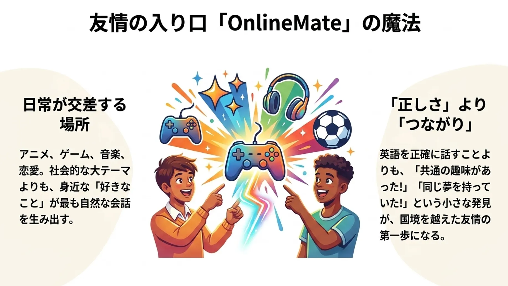
このOnlineMateは、Global Classroomの中でも特に大切な活動です。なぜなら、生徒たちが最も自然に会話を始めるのは、社会的に大きなテーマだけではなく、自分の好きなことや日常の小さな話題だからです。共通のゲームが好きだった、同じ音楽を聴いていた、将来の夢が似ていた。そのような小さな共通点が、国境を越えた友情の入り口になります。
なぜこの活動はうまくいっているのか
Global Classroomがうまく機能している理由は、偶然ではありません。活動の背景には、言語教育、異文化理解教育、オンライン学習、社会心理学の観点から見ても説明できる要素があります。
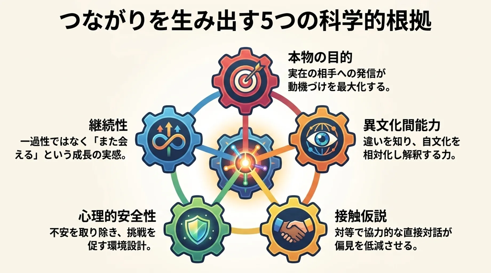
-
✔
第一に、「本物の相手」と「本物の目的」を持つ言語活動です。相手が実在し、返答が予測できず、自分の言葉が相手に届く状況は、学習への動機づけを大きく高めます。
-
✔
第二に、異文化間コミュニケーション能力を育てる構造です。「日本では普通だと思っていたことが世界では違う」と気づくことこそが異文化理解の出発点です。
-
✔
第三に、「接触仮説」に基づく設計です。対等な関係、共通の目的、支援する大人の存在が、異文化接触を肯定的な経験へ変えます。
-
✔
第四に、心理的安全性の重視です。少人数のBreakout RoomとFacilitatorの存在が、不安を取り除き、話すことへの挑戦を促します。
-
✔
第五に、継続性です。一回限りではなく「また会える」という環境が、生徒に継続的な英語使用の理由を与えます。
友情が生まれる瞬間
Global Classroomの成果は、テストの点数だけでは測れません。もちろん、英語で質問する力、聞き取る力、自分の考えを伝える力は育っていきます。しかし、私にとって最も大きな成果は、生徒たちの中に「世界に友達がいる」という感覚が生まれることです。
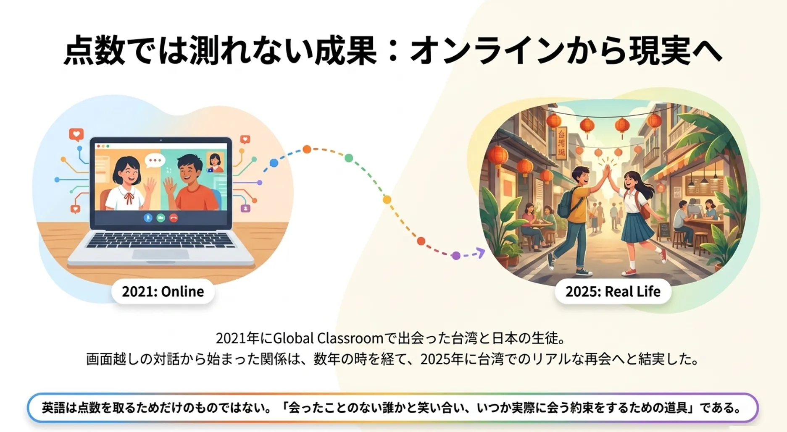
2025年、私にとって忘れられない連絡が届きました。2021年にGlobal Classroomへ参加し始めた台湾と日本の生徒が、実際に台湾でリアルに会ったという知らせでした。オンライン上で出会った二人が、数年後に実際の世界で再会する。これは、創設者として言葉にならないほど嬉しい瞬間でした。
その時、私は強く思いました。彼らの未来の一部を作ったのは、間違いなくGlobal Classroomだったのだと。そして、英語教師として自分がやってきたことは間違っていなかったのだと。
英語教師の仕事は、受験指導だけではありません。もちろん、大学入試に向けて文法を教え、長文読解を鍛え、英作文を添削することは大切です。それによって生徒の進路が開かれることもあります。しかし、言語を教える教師が本当に伝えるべきことは、英語の先に人がいるということです。
英語は、点数を取るためだけのものではありません。英語は、誰かの人生に触れるためのものです。英語は、自分の世界を少し広げるためのものです。英語は、会ったことのない誰かと笑い合い、考え合い、いつか実際に会う約束をするためのものです。この感覚を生徒に届けられるかどうか。私はそこに、英語教師としての大きな境界線があると思っています。
国際交流の真髄
私がGlobal Classroomを続ける理由は、英語教育へのこだわりだけではありません。私にとって国際交流の真髄とは、「よりよい世界を作るための足がかり」です。
世界を知ること。相手を知ること。相手の文化を知ること。相手の言葉を知ること。そして、相手の存在を認め、互いに敬うこと。その小さな連鎖が広がっていく時、世界をよりよくしようという思いや行動が、無数に生まれていくのだと思います。
SDGsの目標4.7では、持続可能な開発、平和と非暴力の文化、グローバル・シチズンシップ、文化的多様性の尊重に関する教育の重要性が示されています。Global Classroomは、大きな政策文書の言葉を、教室の中の具体的な体験へと変える実践です。生徒たちは、難しい理論を先に学ぶのではありません。まず、画面の向こうにいる一人の友達と出会います。その友達の話を聞き、自分の話をします。その後で、世界は一つではないこと、文化は多様であること、そして違いは恐れるものではなく学び合うものだと理解していきます。
国際交流は、特別な学校や、一部の英語が得意な生徒だけのものではありません。インターネット環境があれば、地方の学校からでも、普通の教室からでも、世界とつながることができます。だからこそ、Global Classroomには意味があります。お金をかけた海外研修だけが国際交流ではありません。教師たちが協力し、オンライン上に安全で温かい場を作れば、生徒たちはそこから世界へ歩き出すことができます。
これからのGlobal Classroom
Global Classroomは、完璧なコミュニティではありません。時差の問題、通信環境の問題、実施時期（各国の学校スケジュール）、参加者数の調整、トピック設定、Facilitatorの確保など、毎回さまざまな課題があります。時には、思ったように会話が盛り上がらないこともあります。生徒が緊張して沈黙してしまうこともあります。国や学校によって、英語力にも大きな差があります。
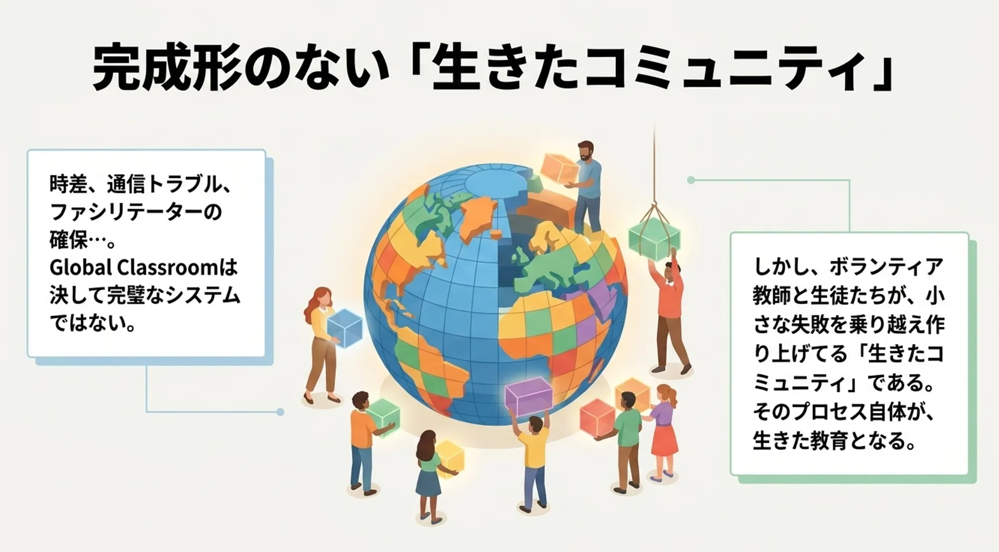
しかし、それでもこの活動を続ける価値があります。なぜなら、Global Classroomは完成されたシステムではなく、世界中の教師と生徒が一緒に作り続ける生きたコミュニティだからです。毎回の小さな失敗や改善が、次のセッションをよりよくしていきます。教師たちがボランティアで関わり、生徒たちが自分の意思で参加し、そこに新しい出会いが生まれる。そのプロセスそのものが、教育なのだと思います。
私は、教師として、教育者として、そしてGlobal Educatorとして、明日の小さなオンラインセッションが、生徒たちにとって新しいつながりの始まりになることを願っています。画面の向こうにいる誰かとの出会いが、将来の留学につながるかもしれない。将来の仕事につながるかもしれない。あるいは、人生のどこかで再会する大切な友人になるかもしれない。
その可能性を信じて、私はGlobal Classroomを続けていきます。支えてくれるCo-founderのメンバー、世界中のFacilitatorの先生方、参加してくれる生徒たち、そしてこの活動を信じて送り出してくれる先生方と共に、できる限りこの場を守り、育てていきたいと思います。
いつか、このGlobal Classroomで出会ったメンバーたちと、同じテーブルを囲んで食事をしたい。オンライン上で何度も笑い合った仲間たちと、実際に同じ空間で語り合いたい。その日を想像するだけで、この活動を続ける力が湧いてきます。
Global Classroomは、単なるオンライン英会話イベントではありません。
世界中の教師と生徒が、友情を通してよりよい世界を作ろうとする、
小さくて大きな教育運動です。
そして今日も、どこかの国の生徒が、
画面の向こうにいるまだ見ぬ友達に向かって、少し緊張しながらこう言います。
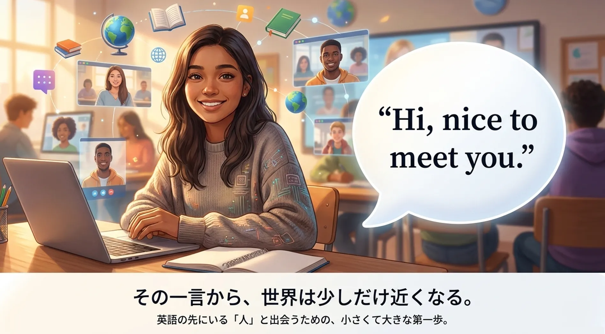
“Hi, nice to meet you.”
その一言から、世界は少しだけ近くなります。
Academic References
- Allport, G. W. (1954). The Nature of Prejudice. (接触仮説の基礎)
- Byram, M. (1997). Teaching and Assessing Intercultural Communicative Competence.
- Pettigrew, T. F., & Tropp, L. R. (2006). A meta-analytic test of intergroup contact theory.
- Vygotsky, L. S. (1978). Mind in Society. (社会文化的学習理論・足場かけ)
- Krashen, S. D. (1982). Principles and Practice in Second Language Acquisition. (情意フィルター仮説・心理的安全性)
- OECD (2018). The OECD PISA Global Competence Framework.
- UNESCO (2016). Target 4.7: Sustainable Development and Global Citizenship.